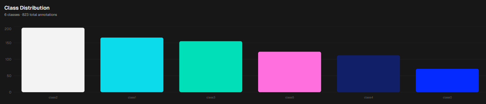

Projet SHARP
Détection temps réel — Computer Vision & YOLO26
Danaé Albrecht--Martin · Sabrina Alhammuti · Jules Jacquin
CNAM / Unistra · Soutenance IA · 11/06/2026
Sommaire
- Objectif & contraintes
- Architecture globale
- Pipeline de Training (A)
- Dataset & annotation
- Augmentation & training
- Résultats & métriques
- Serving & Dashboard (B)
- Qualité & démo live
Objectif
Compter en temps réel le nombre de doigts levés (flux webcam).
6 classes (0 à 5), une bounding box par main :
0_doigt1_doigt2_doigts
3_doigts4_doigts5_doigts
Le dashboard calcule la somme totale des doigts détectés.
Contraintes respectées
Stack technique
- Python 3.12
- Modèle YOLO26
- Plateforme Ultralytics HUB
Exigences
- App dockerisée
- Inférence ≥ 10 FPS
- CI/CD & Qualité
Architecture globale
Training (A)
Package sharp : pipeline local reproductible (extraction → évaluation).
Serving (B)
Backend FastAPI + Frontend Vue 3. Proxy inverse via nginx.
DatasetHUB
→
YOLO26Training
→
best.ptWeights
→
FastAPIAPI
→
WebLive
Dataset & annotation

Annotation manuelle via Ultralytics HUB pour les 6 classes.
Data augmentation
Couleurs (HSV)
- hsv_h = 0.05
- s = 0.7, v = 0.6
Gère les teints de peau et éclairages.
Géométrie forte
- degrees = 45 · rotation — levier clé
- shear = 2, perspective = 0.001
- fliplr = 0.8, flipud = 0.8
→ mains inclinées / tournées enfin détectées.
Monter fortement la rotation (degrees = 45) a été déterminant — sans elle, le modèle ratait les mains tournées. Couplée au miroir vertical (flipud), elle force le modèle à généraliser la structure de la main peu importe l'angle de la webcam.
Entraînement
Configuration finale
- Modèle : YOLO26m (medium)
- Image size : 640 · batch -1 (auto)
- Époques : 200 · patience 50
Environnement (Ultralytics HUB)
- GPU H200 SXM · entraînement en 2 min
- Coût compute : ~0,20 $
- Ultralytics 8.4.65 · Docker
Modèle medium retenu pour l'accuracy ; l'inférence GPU tient la cible ≥ 10 FPS en live.
Scheduler cosinus (cos_lr) + close_mosaic = 10 pour stabiliser la fin d'entraînement sous forte augmentation.
Résultats & métriques
Évaluation sur le jeu de test via model.val(). Confusion résiduelle 4 vs 5 doigts.
Serving & Dashboard
Backend (FastAPI)
- Modèle chargé au boot
- Endpoint /predict
- Sécurité par x-api-key
Frontend (Vue 3)
- Tailwind + DaisyUI
- Overlay Canvas dynamique
- Somme auto des doigts
docker compose up --build # Dashboard sur port 8080
Qualité & CI
Standardisation
- Linting : ruff
- Formatage : black
- Hooks : pre-commit
Automatisation
- GitHub Actions (PR)
- Tests unitaires pytest
- Type hints (PEP 484)
Merci
Questions ?
Projet SHARP · GitHub /develop